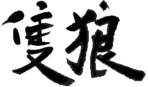
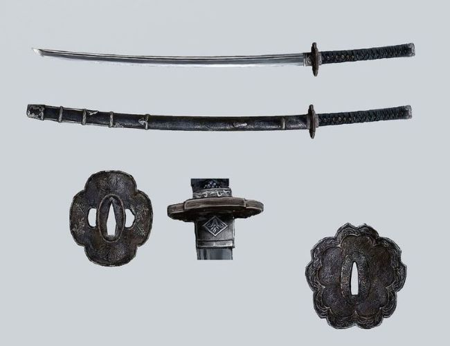
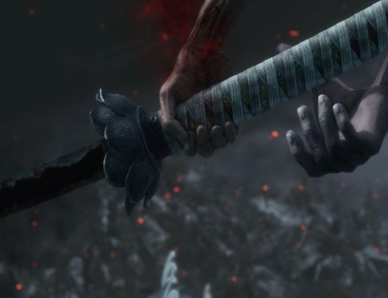
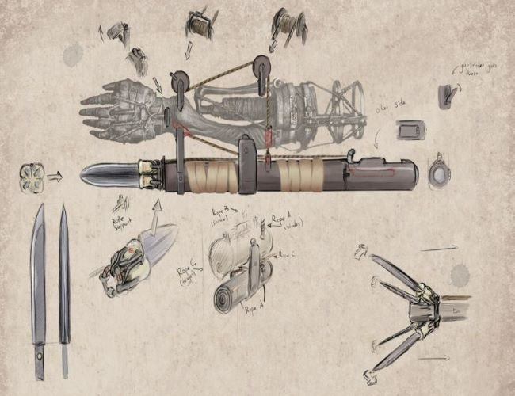
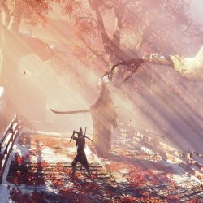
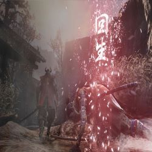
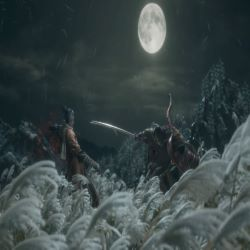
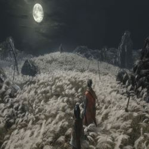

×
封面
游戏角色
武器&故事
画册
关于我

封面
游戏角色
武器&故事
画册
关于我
武器

楔丸
在《只狼》中，「楔丸」是主人公最早入手的兵器。 它没有虎彻、村正般的传奇故事，名字本身也包含了维系纽带的家常意味：即便忍者注定是杀人的宿命，也不可舍弃仅有的一点慈悲之心。
红色不死斩：拜泪
不死斩是只狼里的武器 是仙峰寺收藏的武器，传世的有两把，相传必须是拥有不死之力的人方可拔刀 “拜泪”，红色不死斩，是取樱龙泪的仪式刀。

黑色不死斩：开门
开门，黑色不死斩，是献祭不死之体从黄泉召回亡者的仪式刀。 两把不死斩均有斩杀不死者的能力，开门无法获得
忍义手
主人遭掳时被葦名弦一郎斩掉左手臂，之後從佛雕師（隻猩，即飛猿）得到了「忍義手」

故事背景
《只狼》讲述了一群企图恢复生死轮回，断绝不死诅咒的奋斗者的故事。

战国时代
游戏的背景是16世纪末架空的战国时代后期的日本。玩家操纵的是一位名叫“狼”的独臂忍者，其目的是拯救主人

故事背景
16世纪日本战国时代末期，剑圣苇名一心透过“盗国血战”统治了苇名国。此时，魁忍猫头鹰也在战场收养了一位无名孤儿，并将其命名为狼。

被斩断左臂
20年后，由于一心的衰老和染病以及内府势力的围剿，苇名国处于崩坏的边缘。为重振苇名国，苇名一心之孙苇名弦一郎绑架了皇子九郎，希望利用他体内能使人获得不死之力的“龙胤”来制造不死的军队。此时，狼已成长为成熟的忍者，潜进苇名城营救九郎但在城外被弦一郎阻止，不但落败而且被砍去左臂。

拯救神子
狼利用忍义手再度潜入苇名城营救九郎，再次与弦一郎战斗并将其击败。尽管可以永远离开苇名国，但是九郎决定留下来并完成“断绝不死”的仪式，消灭龙胤以免任何人获得永生。